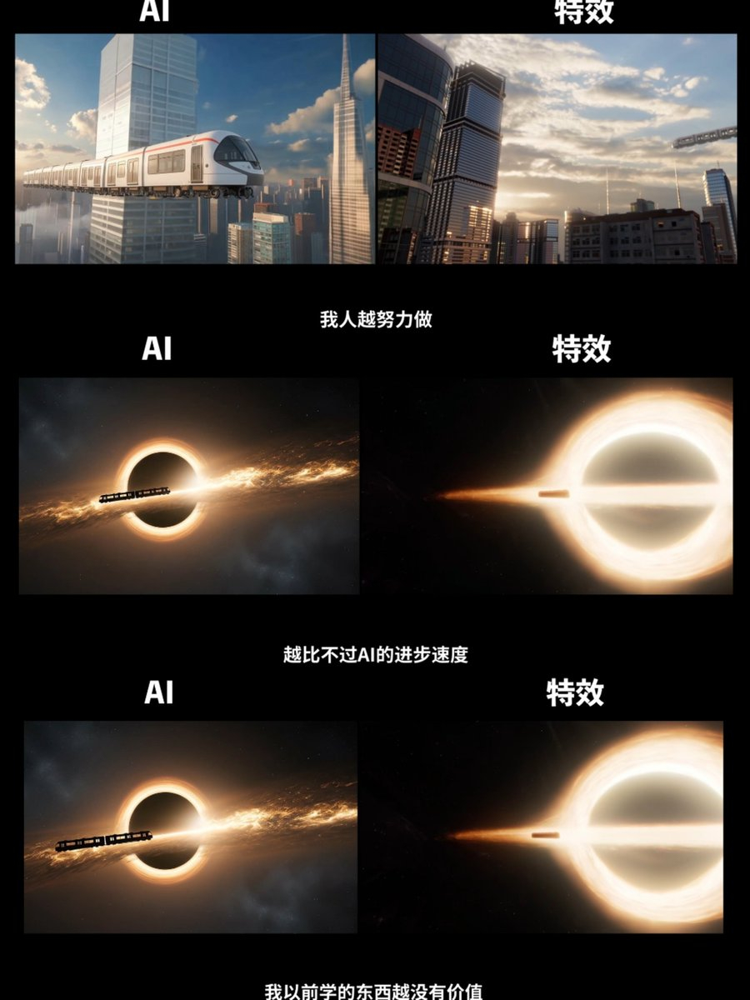

青石巷🍀🕊️
@qingshixiang258
没有意义，很多我喜欢的需要学习的事情ai一瞬间就可以完成，我再去学习当然对于别人没有丝毫的意义，但是在我学习喜欢的东西的时候我是开心的，这就足够了。

琉璃烁烁
@wdesocute
今天看了个视频，大意就是图片这样
我现在就有这样的问题：我写的东西虽说也不怎么好，但是却要花费两个多小时
然而我用grok生成小说，完全超过了我，不管是速度，还是质量
我也可以用ai一天更好几篇，也可以说谎“这就是我写的”
我再去花两个多小时写一篇不怎么样的小黄文，真的有意义吗(´つヮ⊂︎) https://t.co/mPGcK0tctU